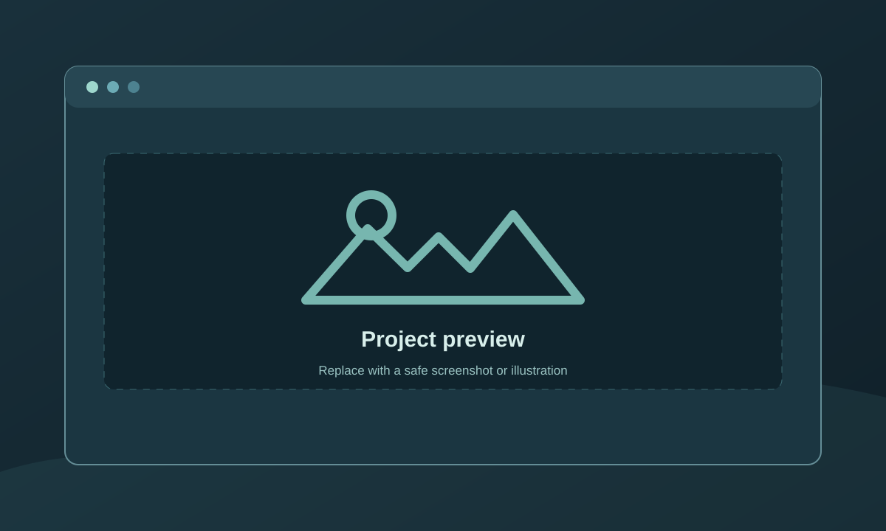

← Back to projects
[CATEGORY] / [PROJECT TYPE]
[PROJECT TITLE]
[WHAT THE PROJECT DOES IN PLAIN LANGUAGE]
- MY ROLE
- [ROLE]
- TOOLS
- [TOOLS]
- STATUS
- [BUILT / TESTING / PORTFOLIO EXERCISE]

Why I built it
[WHO NEEDED THIS AND WHY THE WORK MATTERED.]
The problem
[WHAT WAS SLOW, ERROR-PRONE, OR HARD TO TRACK BEFORE.]
What I built
[THE MAIN FEATURES, INPUTS, OUTPUTS, AND YOUR CONTRIBUTION.]
Operating procedure
- [STEP 1]
[ACTION AND CHECK.]
- [STEP 2]
[ACTION AND CHECK.]
- [STEP 3]
[ACTION AND CHECK.]
Outcome and evidence
[STATE WHAT YOU VERIFIED. ADD A % ONLY IF YOU HAVE A BEFORE VALUE, AFTER VALUE, AND COMPARABLE MEASUREMENT METHOD.]
Current limits: [WHAT IS STILL IN TESTING, PRIVATE, OR UNMEASURED.]